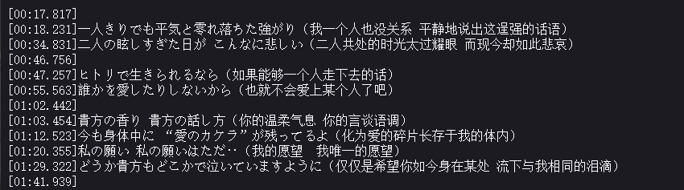

首页
6月
鸿蒙到底是啥
scrollIntoView 失效的原因之一 ：对该元素设置了
display: contents
。
nocodb
no code db 开源的无代码数据库软件
strapi/strapi: 🚀 开源的Node.js无头CMS，可轻松构建可定制的API
no code db
Typescript函数返回类型怎样根据传入参数值的不同而改变？ - 知乎
ruff
使用 js 的嵌入式开发方案 ，开发板好贵 热度也不高
github.com/hezedu/history-navigation-vue
单页面应用上的多页导航
了解 vue composition-api 原理
Edge浏览器并没有保存网页的功能，依托脚本能解决吗？ - 知乎
malagu_svelte-kit
, malagu 与 svelte-kit 结合
体验地址
go 与 node.js 运行速度测试
看到了
为什么现代CPU每秒数亿次计算，但是程序仍旧很卡? - invalid s的回答 - 知乎
所做出的尝试
你的代码也有一点小小的问题，我刚修改了一下在我的电脑上跑 100_000_000 个循环，go 比 node.js 略快一点点
Update main.js by 2234839 · Pull Request #1 · bearfighting/prime_test
https://api.heycmm.cn/Lrc/1459929828
这个效果看起来莫名带感

好库
xterm.js
A terminal for the web ，用来在网页中实现终端的库
好文
情商之我见
(
备份
) ，社交是一种能力，但现在一些社交行为实在不能让我认同，于是便不再多言便渐渐不再会社交了
她指的那个“情商高”的同学，其实是我最不喜欢的一类人。他很爱哗众取宠，油嘴滑舌，装模作样，拉帮结派的。这种人被定义为“情商高”，我也不知是什么人的主意，按照什么样的标准，但到现在，我发现中国已经遍地是这类“高情商”的人了。
windows 创建符号链接（软链接），我使用这个方法来将
singleFile
保存的网页从默认的下载目录修改到我的笔记本下的备份文件夹
mklink /d d:\res\Downloads\doc_save C:\Users\username\Documents\SiYuan\data\note\assets\web_backup
这个命令就是将 doc_save 指向 web_backup，要在以管理员身份运行的 cmd 中执行这个命令
收到赞助
网页笔记
收到了群友给的 2.22 元红包，本来发的 3.3 被群里一个开挂的抢了，后来发的专属 2.22
查典式学习法